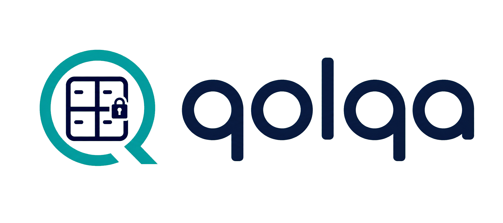
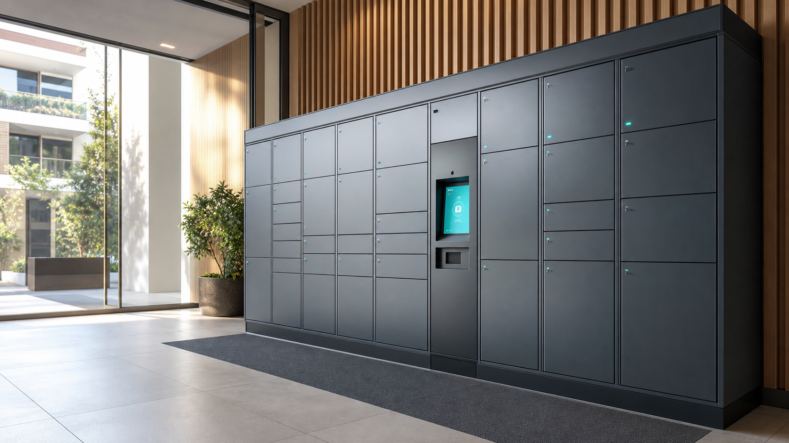

Condominios y edificios
Recepcion de encomiendas sin filas, menos carga para conserjeria y retiro autonomo mediante PIN o QR.


Custodia inteligente para operaciones 24/7
Automatice entregas, retiros y custodia con casilleros inteligentes seguros, trazables y administrados desde una operacion centralizada.
Soluciones
QOLQA reduce la carga operativa, mejora la seguridad y entrega una experiencia de retiro simple para usuarios, residentes, pasajeros, colaboradores y clientes.
Recepcion de encomiendas sin filas, menos carga para conserjeria y retiro autonomo mediante PIN o QR.
Custodia segura de equipaje y objetos para pasajeros que necesitan retirar a cualquier hora, con trazabilidad de uso.
Guarda de equipaje, retiro de pedidos y entregas internas con menor dependencia del meson de recepcion.
Puntos de retiro para colaboradores, clientes y proveedores con administracion centralizada y monitoreo en tiempo real.
Por que elegir QOLQA
QOLQA permite administrar casilleros en forma centralizada, mantener visibilidad de la operacion y entregar una experiencia segura para cada usuario final.
Aplicaciones
Una misma solucion puede adaptarse a distintas operaciones que requieren custodia segura, retiro autonomo y control permanente.
Recepcion ordenada de encomiendas y retiro disponible para residentes.
Custodia de equipaje y retiro de pedidos con menor carga para recepcion.
Guardado temporal para pasajeros con operacion continua y trazable.
Puntos de retiro para compras, servicios y entregas de alto flujo.
Entrega de activos, documentos y paquetes para colaboradores.
Custodia y retiro para estudiantes, funcionarios y proveedores.
Implementacion
Se identifican ubicaciones, volumen de uso, perfiles de usuario y flujo de retiro.
Se habilitan los casilleros y se ajusta la operacion al espacio disponible.
Los equipos responsables reciben una pauta simple para administrar la solucion.
El servicio queda disponible para usuarios con monitoreo y soporte operativo.
Contacto Comercial
QOLQA esta orientado a organizaciones que necesitan automatizar entregas, retiros y custodia segura con una operacion profesional.